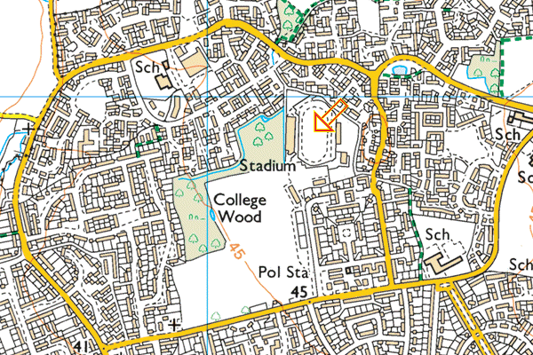

UK CAU Inter-Counties Championships
Saturday 22 and Sunday 23 July 2023
Chelmsford, Essex
The UK Counties Athletic Union Championships are contested by all the counties, districts and regions of the UK, and are held in conjunction with the England Athletics Senior AAA Championships.
After a couple of years at the Manchester Regional Arena, and having been cancelled in 2020 owing to Covid-19, the England Athletics Senior Championships returned to the Bedford International Athletics Stadium in 2021. However the UK CAU Inter-Counties Championships were cancelled for 2021 and again for 2022.
In 2023, the England Athletics Senior Championships are due to take place on Saturday 22 and Sunday 23 July, this time at Chelmsford, and also incorporating the UK CAU Championships for the first time since 2019.
Although it was intended that county Team Managers would select their team from the athletes who had entered the EA Championships as in previous years, this seems not to have happened and so the UK CAU Championships were effectively cancelled.
Location
The Chelmsford Sport and Athletics Centre is in Melbourne Park, Salerno Way, Chelmsford. The postcode is CM1 2EH.

View Ordnance Survey map (using Streetmap)
Get directions (using Google Maps)
View Bird's Eye (using Bing Maps)
The stadium is approx 1.5 miles north west of the City centre and is signposted by brown tourist signs to the Sports Centre/Football stadium. Drivers should be alert to the 30 mph speed cameras in the City which are operative.
The stadium has a large car park for cars and coaches (free), changing facilities, and toilets inside the Centre and around the track. Covered stands are on the home and back straights.
Previous years' results
| Venue and Date | Senior Men | Senior Women |
| Bedford, 27/28 May 2007 | 6th | 10th |
| Bedford, 25/26 May 2008 | 10th | 6th= |
| Bedford, 24/25 May 2009 | 10th | 4th |
| Bedford, 30/31 May 2010 | 9th | 6th |
| Bedford, 29/30 May 2011 | 6th | 8th |
| Bedford, 25/26 August 2012 | 5th | 10th |
| Bedford, 24/25 August 2013 | 6th= | 9th |
| Bedford, 23/24 August 2014 | 10th= | 8th |
| Bedford, 1/2 August 2015 | 3rd | 9th= |
| Bedford, 30/31 July 2016 | 6th | 9th |
| Bedford, 29/30 July 2017 | 3rd | 9th |
| Manchester, 28/29 July 2018 | 5th | 12th |
| Manchester, 27/28 July 2019 | 5th/Div 1 | 6th=/Div 2 |
| No competition in 2020, 2021 or 2022 |